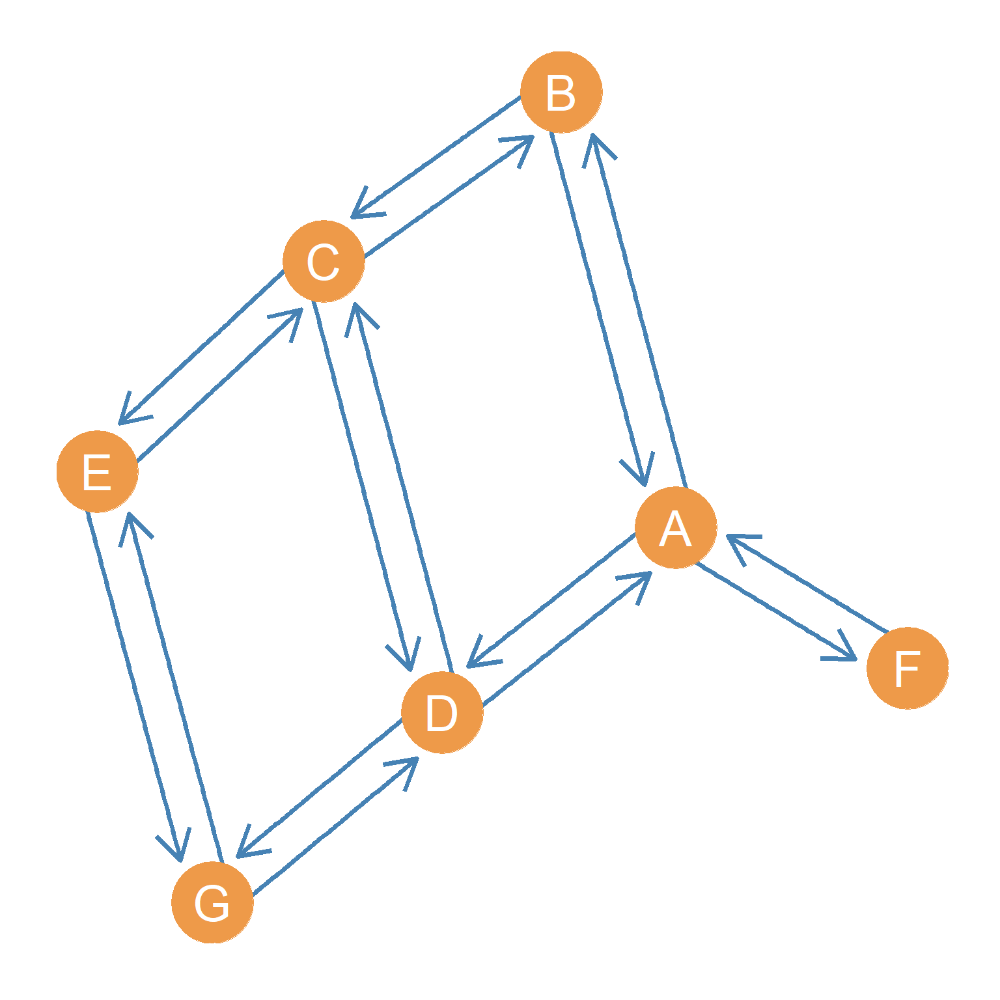
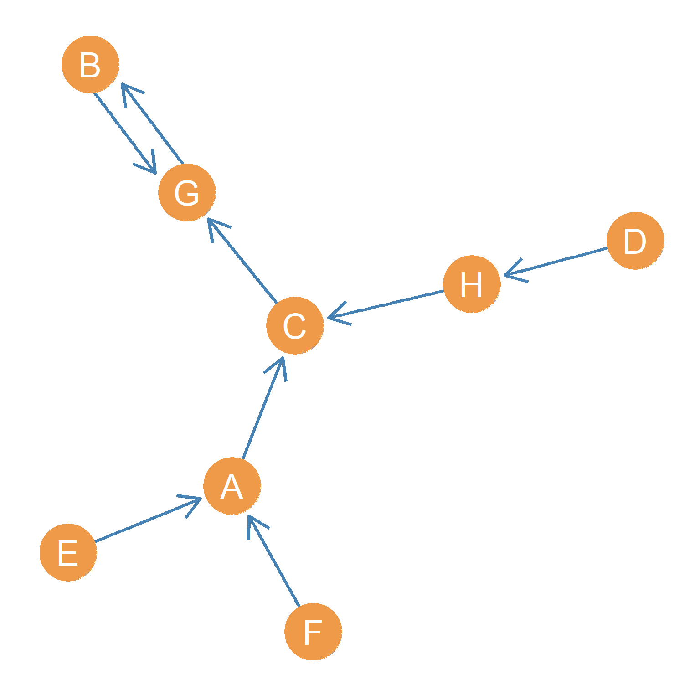
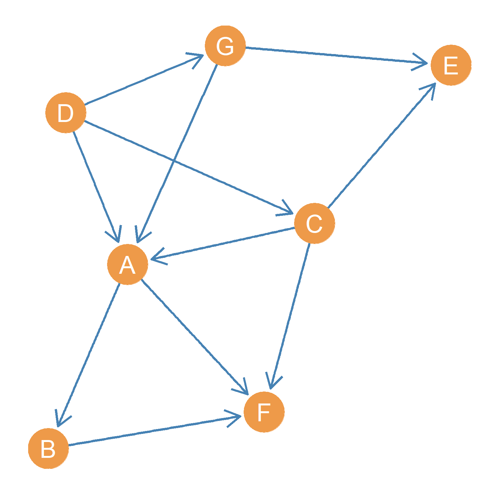

Special Kinds of Directed Graphs
Symmetric Directed Graphs
There are also some special types of directed graphs created when we impose some restrictions on either reciprocity or edge directionality. For instance, if in a directed graph, every pair of adjacent nodes is connected via a bi-directional, reciprocal relationship then it is called as symmetric directed graph.
Figure 1 shows a symmetric directed graph with eight nodes and thirty two bi-directional edges.
Functional Graphs
There is also a special kind of digraph built by imposing the restriction that each node can only have a single out-neighbor. This means the outdegree of each node is equal to one for each node in the graph. This is called a functional graph and has applications in the anthropological analysis of kinship exchange systems in less differentiated societies [@hageharary96].

For instance, Figure 2 shows a functional graph with eight nodes. If a graph \(G\) is a functional graph, then the number of nodes \(V\) is always equal to the number of directed edges \(E\). Thus, the cardinality of the edge set is constrained to be the same as the cardinality of the node set, via the constrain that each node’s degree is equal to one. Thus, in Figure 2, \(V = E = 8\).
Oriented Graphs
What happens if we build a network composed of directed links that go only in one direction? That is, if a sends a link back to b we never observe b sending a link back to a. Such a directed graph lacks reciprocity in each connected dyad.

The resulting graph is a special type of directed graph called an oriented graph, like the one in Figure 3. An oriented graph is kind of the opposite of the kind of symmetric directed graph depicted in Figure 1. Whereas in Figure 1 every connected dyad is linked by a bi-directional reciprocal link, in the oriented graph shown in Figure 3, every connected dyad is linked only by a one-way non-reciprocal link, the link that would turn the asymmetrically connected dyads in Figure 3 into a reciprocal dyad is forbidden by the nature of the tie.